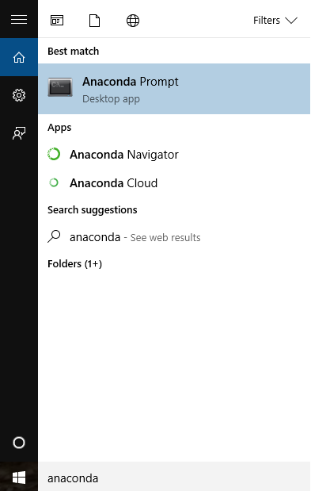
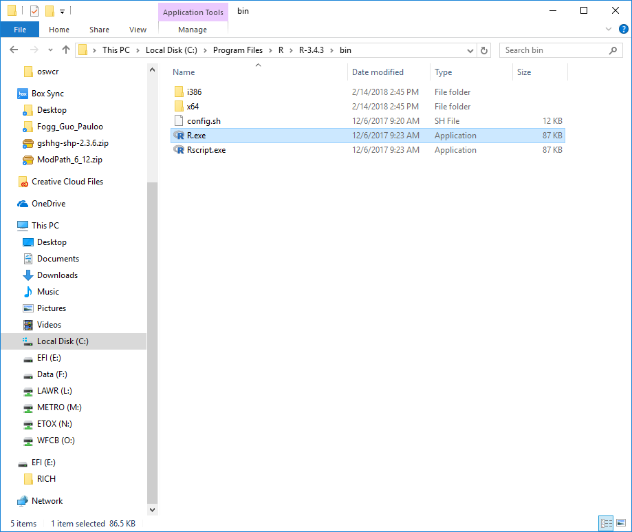
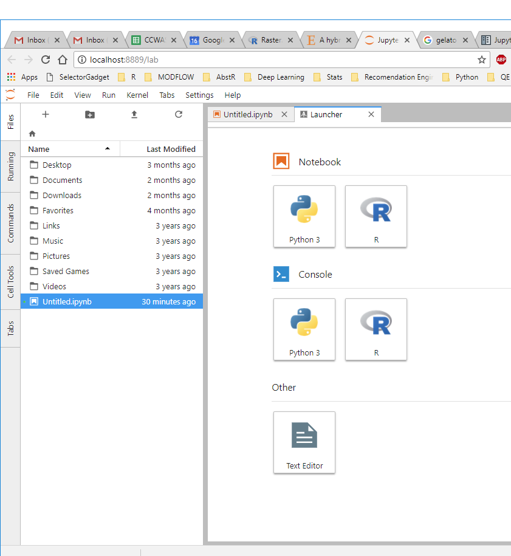

Installing the R kernel in Jupyter Lab
By Rich
May 16, 2018
I was recently pretty impressed with Jupyter’s newest creation, the Jupyter Lab IDE. You can test drive an online demostration of Jupyter Lab with a Python and R kernel here.
I downloaded a version, and found that the R Kernel was missing! To get the R kernel up and running in Jupyter Lab was a bit more complicated than expected. This guide is meant to break things down step by step.
I did this on Windows and OSX.
Windows Instructions
1. Install Anaconda
Download here. This gives you a few important things: Jupyter notebooks, and the Anaconda Prompt.
2. Install the Jupyter client
Search for the Anaconda Prompt in your computer, right click, and run As Adminstrator.

In the prompt type:
conda install -c anaconda jupyter_client
3. Install the IR Kernel
I assume you have R on your computer. If not, I recommend downloading it here.
Find the location of R.exe on your computer. In my computer this executable is at: C:\Program Files\R\R-3.4.3\bin.

Open another Anaconda Prompt as Adminstrator and change directories to wherever R.exe is on your computer with cd file path. On my computer it’s: cd C:\Program Files\R\R-3.4.3\bin, but it might be different for you.
Then run R from within Anaconda Prompt in Admin mode with R.exe.
Once in an R session, run the following three commands:
install.packages("devtools")
devtools::install_github("IRkernel/IRkernel")
IRkernel::installspec()
In order, they (1) install the devtools package which gets you the install_github() function, (2) install the IR Kernel from github, and (3) tell Jupyter where to find the IR Kernel.
4. Open Jupyter Lab and enjoy your new R kernel!
Open Anaconda Prompt and type in jupyter lab. Jupyter Lab should launch and display both a python and R kernel.

OSX Instructions
I found installation on my Mac a lot easier. I just followed the steps here.
1. Install Anaconda
Download the Mac version here and run through the setup.
2. Open R and install the necessary packages
Open up the R prompt and enter:
install.packages(c('repr', 'IRdisplay', 'evaluate', 'crayon', 'pbdZMQ', 'devtools', 'uuid', 'digest'))
devtools::install_github('IRkernel/IRkernel')
3. Configure IRkernel from within R
It’s important that these next commands are done from within the version of R that you want to link to Jupyter Lab.
I found my version of R in richpauloo$ /Library/Frameworks/R.framework/Versions/3.4/Resources/bin/R. Navigate to the version of R you’re using, lanuch R.exe, and enter:
IRkernel::installspec() # install for the current user
IRkernel::installspec(user = FALSE) # install system-wide
Fire up Anaconda, launch a Jupyter Lab session, and you should see an R kernel waiting for you!
Lastly, I found the Jupyter Lab User’s Guide to be pretty helpful, and you might too.
- Posted on:
- May 16, 2018
- Length:
- 3 minute read, 433 words
- See Also: